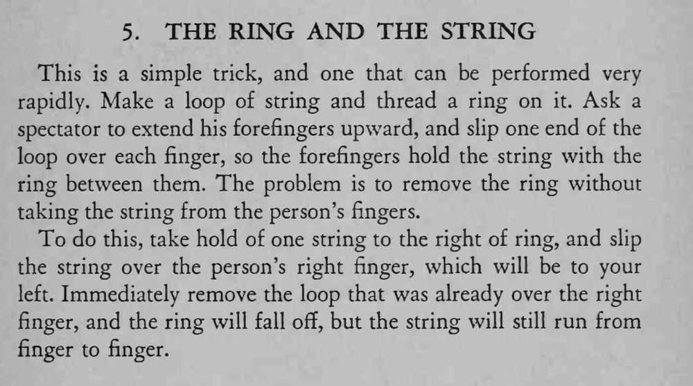

戒指穿在绳环上，绳环套着观众的两根食指；魔术师不把绳子从手指上取下，就让戒指自己脱落。
先褪后取，顺序不能反，动作连贯才看不出破绽。

This is a simple trick, and one that can be performed very rapidly. Make a loop of string and thread a ring on it. Ask a spectator to extend his forefingers upward, and slip one end of the loop over each finger, so the forefingers hold the string with the ring between them. The problem is to remove the ring without taking the string from the person's fingers. To do this, take hold of one string to the right of ring, and slip the string over the person's right finger, which will be to your left. Immediately remove the loop that was already over the right finger, and the ring will fall off, but the string will still run from finger to finger.